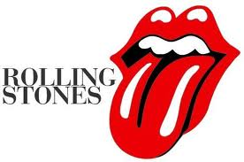
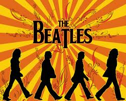
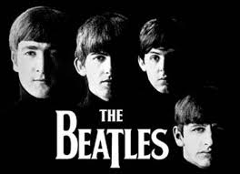
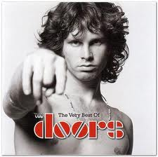
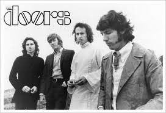
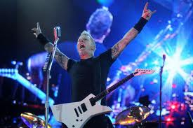

LAS MEJORES BANDAS DE ROCK
El rock es un género musical surgido en Estados Unidos en la década de 1950, que evolucionó hacia una variedad de estilos a partir de la década siguiente,1 y rápidamente se popularizó por gran parte del mundo. Su forma originaria, conocida como rock and roll, surgió mayormente de la combinación de dos géneros anteriores como eran el rhythm and blues y el country. La música rock también se nutrió fuertemente del blues y el folk, e incorporó influencias del jazz, la música clásica y otras fuentes.
Musicalmente, el rock se ha centrado en la guitarra eléctrica, normalmente como parte de un grupo de rock con cantante, bajo, batería y, algunas veces, instrumentos de teclado como el órgano y el piano. Típicamente, el rock es una música centrada en las canciones, habitualmente con compás de 4/4 y usando una estructura verso-estribillo, pero el género se ha vuelto extremadamente diverso y las características musicales comunes son difíciles de definir. Como la música pop, las letras se centran a menudo en el amor romántico, pero también tratan un rango amplio de otros temas con un enfoque frecuente en lo social y lo político. El dominio del rock por músicos varones ha sido visto como uno de los factores principales que definen los temas explorados en la música rock. El rock pone más énfasis en la composición, la actuación en vivo, y la autenticidad que la música pop.
 E mail
Facebook
E mail
Facebook
Contenido

• The Rolling Stones es una banda británica de rock originaria de Londres. La banda se fundó en abril de 19622 por Brian Jones, Mick Jagger, Keith Richards, Ian Stewart y Dick Taylor. El guitarrista Geoff Bradford y el baterista Mick Avory los apoyaron en sus primeros ensayos, mientras que los bateristas Tony Chapman y Carlo Little3 tocaron en sus primeras actuaciones. Tras la salida de Taylor en diciembre de 1962, ingresaron en su lugar el bajista Bill Wyman y en enero de 1963 al baterista Charlie Watts. A petición de su mánager, Stewart fue retirado de la alineación en 1963, aunque siguió colaborando en las sesiones de grabación y como road mánager. Brian Jones fue despedido en 1969, falleciendo al poco tiempo, siendo reemplazado por el guitarrista Mick Taylor, que dejaría el grupo en 1975 y sería a su vez reemplazado por Ron Wood. Con el retiro de Bill Wyman en 1993 se incluyó al bajista Darryl Jones que, aunque toca con la banda desde la grabación del álbum Voodoo Lounge en 1994, no es un miembro oficial.
Son considerados una de las más grandes e influyentes agrupaciones de la historia del rock,4 siendo la agrupación que sentó las bases del rock contemporáneo.5 6 7 Contando desde sus inicios con el favor de la crítica, algunos de sus materiales están considerados entre los mejores de todos los tiempos;8 9 10 11 entre ellos destacan Beggars Banquet (1968), Let It Bleed (1969), Sticky Fingers (1971) y quizá su mejor obra, Exile on Main St. (1972).nota 1 En 1989 fueron incluidos en el Salón de la Fama del Rock and Roll, y en 2004 la revista estadounidense Rolling Stone los colocó en el puesto No. 4 en su lista de Los 50 Mejores Artistas de todos los Tiempos.12 Ningún grupo de rock hasta la fecha ha sostenido tan duradera y todavía mundialmente reconocida trayectoria como The Rolling Stones; con Jagger, Richards y Watts como miembros fundadores en activo, continúan siendo la banda más longeva de la historia del rock.7


• The Beatles fue una banda de rock inglesa activa durante la década de 1960, y reconocida como la más exitosa comercialmente y críticamente aclamada en la historia de la música popular.1 2 3 4 5 6 Formada en Liverpool, estuvo constituida desde 1962 por John Lennon (guitarra rítmica, vocalista), Paul McCartney (bajo, vocalista), George Harrison (guitarra solista, vocalista) y Ringo Starr (batería, vocalista). Enraizada en el skiffle y el rock and roll de los años cincuenta, la banda trabajó más tarde con distintos géneros musicales, que iban desde las baladas pop hasta el rock psicodélico, incorporando a menudo elementos clásicos, entre otros, de forma innovadora en sus canciones. La naturaleza de su enorme popularidad, que había emergido primeramente con la moda de la «Beatlemanía», se transformó al tiempo que sus composiciones se volvieron más sofisticadas. Llegaron a ser percibidos como la encarnación de los ideales progresistas, extendiendo su influencia en las revoluciones sociales y culturales de la década de 1960.
Con una formación inicial de cinco componentes que incluía a Lennon, McCartney, Harrison, Stuart Sutcliffe (bajo) y Pete Best (batería), la banda construyó su reputación en los clubes de Liverpool y Hamburgo sobre un período de tres años a partir de 1960. Sutcliffe abandonó la formación en 1961, y Best fue reemplazado por Starr al año siguiente. Establecidos como grupo profesional después de que Brian Epstein les ofreciera ser su representante, y con su potencial musical mejorado por la creatividad del productor George Martin, lograron éxito comercial en el Reino Unido a finales de 1962 con su primer sencillo, «Love Me Do». A partir de ahí, fueron adquiriendo popularidad internacional a lo largo de los siguientes años, en los cuales hicieron un extenso número de giras hasta 1966, año en que cesaron la actividad en vivo para dedicarse únicamente a la grabación en el estudio hasta su disolución en 1970. Después, todos sus integrantes se embarcaron en exitosas carreras independientes. Lennon sería asesinado a las afueras de su casa de Nueva York en 1980, y Harrison fallecería de cáncer en 2001. McCartney y Starr aún permanecen activos.

Durante sus años de estudio crearon algunos de sus mejores materiales, incluyendo el álbum Sgt. Pepper's Lonely Hearts Club Band (1967), considerado por muchos como una obra maestra. Cuatro décadas después de su separación, la música que crearon continúa siendo popular. Se mantienen como el grupo con más números uno en las listas británicas, situando más álbumes en esta posición que cualquier otra agrupación musical.7 De acuerdo con las certificaciones de la RIAA, han vendido más discos en los Estados Unidos que cualquier otro artista.5 En 2008, la revista Billboard publicó una lista de los artistas más exitosos de todos los tiempos en el Hot 100 con motivo del 50º aniversario de la lista de éxitos,8 y The Beatles fueron colocados en el número uno. Fueron galardonados con siete premios Grammy,9 y recibieron un total de quince premios Ivor Novello de parte de la British Academy of Songwriters, Composers and Authors.

The Doors fue una banda de rock estadounidense, formada en Los Ángeles (California), en julio del año 1965 y disuelta en el año 1973. Junto a Jefferson Airplane, Grateful Dead y Pink Floyd, se convirtió en uno de los máximos exponentes de la psicodelia de los años 60. El grupo es considerado uno de los más influyentes en la historia del rock.
Aunque la carrera de The Doors terminó en 1973, su popularidad se ha mantenido. Según la RIAA , han vendido 32,5 millones de unidades certificadas en los Estados Unidos. La banda ha vendido más de 100 millones de álbumes en todo el mundo.

The Doors se diferenciaba de muchos grupos de rock de la época, porque no usaban un bajo en concierto, enfatizando también el hecho de haber sido influidos por diferentes grupos de rock de la época, así como el destacado género del blues. En vez de esto, Manzarek tocaba las melodías del bajo con la mano izquierda en su novedoso piano Fender Rhodes, una nueva versión del ya conocido piano Fender Rhodes, y las melodías del órgano con la mano derecha. Sin embargo, el grupo usó algunos bajistas en sus grabaciones de estudio, entre ellos Jerry Scheff, quien tocó luego en más de 1,100 conciertos para Elvis Presley (de 1969 hasta su muerte en 1977), así como Doug Lubahn, Harvey Brooks, Kerry Magness, Lonnie Mack y Ray Neapolitan
El 12 de abril de 1954 en los Estados Unidos, el grupo Bill Halley and his comets, grabaron Rock around the clock considerado como uno de los primeros temas del rock. Tres meses después, Elvis Aaron Presley, un joven de 19 años nacido un 8 de enero en Tupelo, Mississippi, que hasta ese momento trabajaba como chofer de un camión, revolucionaría la historia de la música al grabar "That's All Right", considerada la chispa inicial de este explosivo ritmo.
El rock n´roll constituía una fusión entre sonidos de la música negra, como el rhythm & blues o el jazz, y otros de la tradición de los colonos blancos, como la música country. Cabe aclarar que, si bien Elvis lo llevaría a un nivel artístico y de popularidad inédito, tuvo sus primeros pasos de menor masividad con músicos negros como Chuck Berry, Little Richard, Bo Didley o Buddy Holly, así como con músicos blancos como Jerry Lee Lewis, Roy Orbison y Eddie Cochran. Elvis, conocido como el rey del Rock, surgió en principio como una figura comercial más aceptable para presentar el rock & roll a las clases más acomodadas de la época. Luego, el rock “cruzaría el océano” y desde Gran Bretaña, surgirían otras bandas memorables como The Beatles o The Rolling Stones.

La gira del Rock and Roll All Stars, que reúne a importantes figuras de este género musical, corre el riesgo de ser solo un sueño truncado para muchos amantes del rock luego de que se informara ayer la cancelación de sus presentación en cinco países de Latinoamérica.
“Lamentamos informarles a nuestros fans que los shows programados en Ecuador, Colombia, Costa Rica, Panamá, Guatemala y Venezuela han sido cancelados. Se hizo un esfuerzo increíble para trabajar con los promotores locales, pero ellos hicieron imposible realizarlo así”, publicaron los organizadores en un comunicado.
Rock and Roll All Stars cancela conciertos en cinco países de Latinoamérica
Una noche inolvidable llena de alegría, fui con un grupo de 24 personas, compramos los boletos 2 meses antes, nos encantan todos los grupos y solistas que participaron en la Caravana, espero que se repita para el próximo año, no me he perdido ninguna, he asistido a las 3 Caravanas, pertenezco al Club de loa amantes del Rock and Roll, que se reune cada sábado en la Plaza del Rock en la Delegación Cuauhtámoc
Muy Ordenado el acceso, todos los participantes fabulosos recorde mis a#os de jventud, me facinaron los Teen Tops y Leo Dan, me consterno Alberto Vazquez, y me dejo perplejo por como se conserva Angelica Maria y su voz, y extrañe a Cesar Costa, Enrique Guzman y Manolo Mu#iz y por 5 hrs de show excelente el precio y lugar, el sonido muy claro y las canciones todas de 10
Felicidades a los partipantes y organizadores